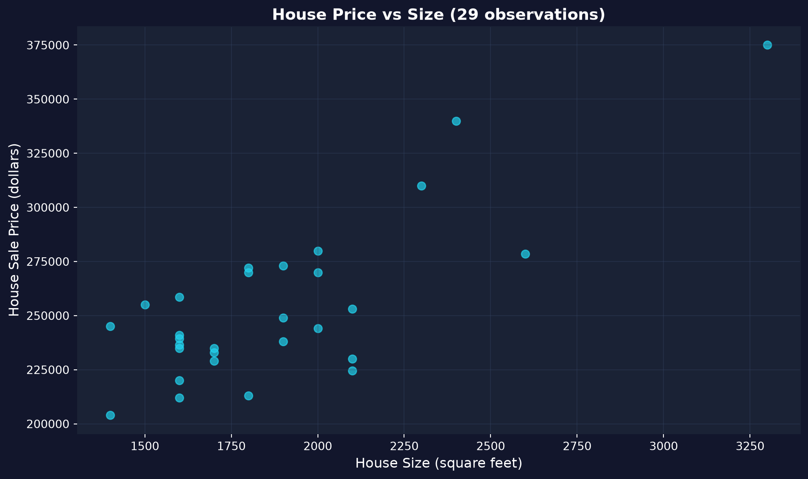
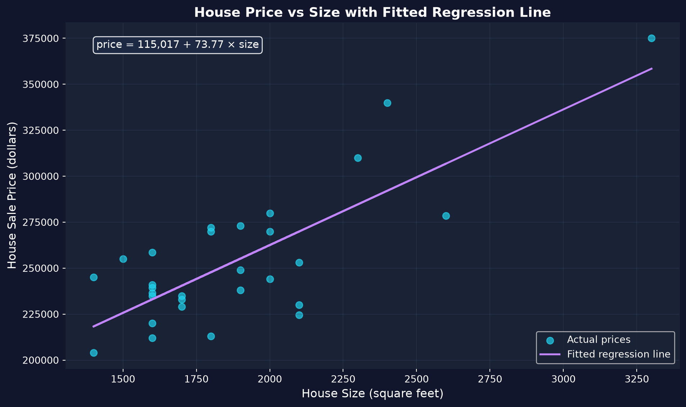

Acto I · La tensión
No podemos asignar aleatoriamente ingresos distintos a las personas, ni darle a una ciudad una rebaja de impuestos y a otra ninguna.
Entonces, ¿cómo medimos cómo una variable económica se mueve con otra? La regresión —la herramienta principal de la econometría— convierte una nube de datos observados en una línea que podemos leer.
La pendiente es casi siempre el número que de verdad te importa.
Acto II · La investigación
29 ventas de casas en Davis, California (1999). Dos columnas llevan la historia: precio y tamaño.
\[\text{price} = \beta_0 + \beta_1 \cdot \text{size} + \varepsilon\]
Queremos \(\beta_1\) —el cambio predicho en el precio por cada pie cuadrado adicional. MCO elige \(\beta_0, \beta_1\) para que las distancias al cuadrado entre los puntos y la línea sean lo más pequeñas posible.
import pandas as pd # pandas → load & handle tabular data
# dataset: 29 house sales in Davis, CA, 1999 (price, size, bedrooms, …)
url = "https://raw.githubusercontent.com/quarcs-lab/data-open/master/AED/AED_HOUSE.DTA"
data = pd.read_stata(url) # read the Stata .dta into a DataFrame
data.head() # peek at the first few rows
data.describe().round(2) # summary stats: mean, std, min, max, quartilesimport pandas as pd # tabular data
import matplotlib.pyplot as plt # plotting
url = "https://raw.githubusercontent.com/quarcs-lab/data-open/master/AED/AED_HOUSE.DTA"
data = pd.read_stata(url) # load the 29 Davis, CA house sales
fig, ax = plt.subplots(figsize=(10, 6)) # one figure + axes
ax.scatter(data["size"], data["price"], # x = size, y = price
s=80, alpha=0.7, color="#22d3ee") # marker size, transparency, colour
plt.show() # render the scatter plot
Cada punto es una casa. La tendencia ascendente es la relación; la dispersión vertical es todo lo que el tamaño no explica.
Un diagrama de dispersión es la primera mirada honesta —muestra dirección y dispersión antes de cualquier modelo.
!pip install -q pyfixest # install pyfixest in Colab (-q = quiet; not preinstalled)
import pandas as pd # tabular data
import pyfixest as pf # pyfixest → OLS regression, R-style formulas
url = "https://raw.githubusercontent.com/quarcs-lab/data-open/master/AED/AED_HOUSE.DTA"
data = pd.read_stata(url) # load the 29 Davis, CA house sales
fit = pf.feols("price ~ size", data=data) # OLS: regress price on size (intercept auto-added)
fit.summary() # β0, β1, SEs, t, p, R²
La línea ajustada a través de la nube, con su ecuación.
Pendiente \(\beta_1 = \$73.77\)/pies² · intercepto \(\beta_0 = \$115{,}017\) · \(R^2 = 0.62\).
Reporta la magnitud, no solo la significancia: $74 por pie cuadrado es el hallazgo económicamente significativo.
Acto III · La resolución
Objeción. “Cada pie cuadrado agrega $74 —así que ampliar mi casa 100 pies² agrega $7,400.”
Respuesta. La asociación no es causalidad. Las casas más grandes también pueden estar mejor ubicadas y mejor renovadas —la pendiente le atribuye al tamaño también el efecto de la calidad. Como las ventas de helados y los ahogamientos: ambos suben en verano, pero uno no causa el otro.
La regresión muestra cómo se mueven juntos \(Y\) y \(X\); una lectura causal necesita un diseño que descarte las alternativas.
pandas, matplotlib, pyfixest).